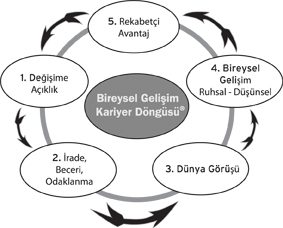

Eğer ağzından çıkan her lafın vecize olarak kaydedildiği bir bilge olsaydım benden sonraki kuşaklara şu sözü bırakırdım: “Hiç bakan ile gören, gören ile gördüğünü ‘okuyan’ bir olur mu?..”
Ne alaka, değil mi? Çok alaka… Hem de çok…
Bir ilişkinin başlaması sırasında ‘okumak’ ne kadar önemliyse, bitirilmesi gerektiğinin ‘fark edilmesi’ aşamasında da o kadar elzemdir. Yoksa garip bir ısrar dönemi başlar ki, gereksiz yere uzun süre acı çekilebilir.
Onun için bazen artık ‘buluşulamadığını’ mümkün olduğu kadar hasarlar oluşmadan tespit etmek ve ‘başkalaşım’ noktası aşılmışsa birliktelikte ısrar etmemek, olayı tadında bırakmak yerinde bir davranış olabilir.
Peki, gemiyi batmaktan kurtarmak mümkün müdür? Elbette mümkündür. Ancak, geri dönülemez noktaya gelmeden önce müdahale ederek. Uçakların kara kutularında, kaza sonrası araştırmalarda tespit edilen o ‘son sözün’ edildiği noktanın öncesinde: “Burnunu kaldır.”
İlişkilere canlılık katmak için pekâlâ aşağıdaki yollar önerilebilir mesela:
Bir: Kavramları ‘Ortak ruhî Şekillenme’ye dayanarak karşındakiyle birlikte yeniden üretmek ya da en azından bunun için çaba harcamak.
Burada hedeflenmesi gereken, ‘üçüncü’ bir ‘dünya görüşünde’ buluşmaya çalışmaktır. Ret ve kabulü aynı anda yaşayarak çatışan dünya görüşlerinin ikisini de reddedip üçüncüsüne doğru birlikte yelken açmak.
Hadi eş tamam da, müşteri bunu neden yapsın? İşte tüketici ve müşteriden çok farklı bir yapının söz konusu olması bunu mümkün kılabilir. Özel müşteriyi (özel hizmet göreni) kaybetmek bir hizmet veren için nasıl çok zararlı ve masraflı olabilirse, özel hizmet gören için de özel hizmet aldığı kişi veya kuruluşu ‘değiştirmek’ aynı derecede ‘hasar verici’ olabilir. Yeni bir ajansın hizmet gören (danışan) kişi ya da kuruluşu, onunla uzun zamandır birlikte çalışmış olan bir önceki ajans kadar tanıyıp anlaması için geçecek zamanın, içinde yaşadığımız ‘hız çağında’ nasıl bir rekabet avantajı kaybına neden olabileceğini hesap edenlerin, bu tür kararlarda biraz daha özenli olduklarını biliyoruz.
İki: Yine hizmet gören, danışan veya eşle birlikte, aslında herkesin kaybedeceği o oyunun kuralını değiştirmeye çalışmak.
Özel müşteri ilişkilerinde en sık başvurulan yöntemlerden birinin bu olduğu düşünülebilir: “Bundan böyle aylık sabit ödemelerle değil, proje bazlı çalışalım.” Bunun eş düzlemindeki uygulaması ise şöyle olabilir: “O kadar ortak şeyimiz var ki, bundan sonra dost kalalım”…
Oysa her iki taraf da çok iyi bilir ki, bir daha birlikte ne proje bazlı çalışmak mümkün olacaktır, ne de dost kalmak…
Üç: Kendi modelini kendi yaratmak.
Yani özgün olmak… Ecnebilikten kurtulmak. Yerli olmak… İşte en zoru budur. Bu her iki taraf için de önyargıları bir kenara bırakabilme, kendi deneyimlerine dönüp oradan dersler çıkarma ve inovatif (yenileşimci) adımlar atabilme becerisi gerektirir.
Peki, bütün bunların ‘çalışıp çalışmayacağını’ nasıl anlayacağız, neyi ‘okuyarak’ kararımızı gönül rahatlığıyla verecek ve hasarları asgaride tutmayı başaracağız?..
Bu sorunun yanıtının aşağıdaki satırların arasında gizli olduğunu ve doğru yanıtı bulmak için sözü edilen ‘döngüyü’ doğru okumak gerektiğini, kitabı buraya kadar okumayı başarmış olanlara hatırlatmaya gerek yok sanırım.
***
Hem bir önceki paragrafta hem de bölüm başında yer alan soruyu, ülkemizde ve uluslararası boyutta patent hakkını alarak tescil ettirdiğimiz, kendisi tek başına bir kitap konusu olabilecek Bireysel Gelişim Kariyer Döngüsü® modeline bakarak yanıtlayabileceğimizi düşünüyoruz.
“Birliktelik, nereye kadar sürmeli?”
Önce hemen yanıtı verelim, sonra konuyu açmaya çalışalım:
Birliktelik, aşağıdaki kıymet ve duygu zinciri kırılana kadar sürmeli. Sonrasında ise ısrar edilmemeli…
Şimdi biraz açalım modeli.
Dairesel hareket izliyormuş duygusu yaratan grafiğin, aslında dikey bir helezon şeklinde hareket ettiğini düşünmeye çalışalım. Her tur tamamlandığında kazanılan yeni bir boyuta sıçranarak farklı bir dairesel hareket çizildiğini… Bu bir.
İkincisi, daha kolay; hareketi tablo üzerindeki herhangi numaralı bir küçük daireden başlatabileceğimizi bir kenara not alalım. Bu da ikinci nokta.
Üçüncüsü, küçük dairelerin kendi içlerinde de bir devinim içinde olduklarını ve bu devinimin ‘tekâmül’ noktasına gelindiğinde ancak o zaman bir sonraki küçük daireye sıçranabileceğini tespit edelim. Etti üç.
Dördüncü olarak dikkat etmemiz gereken husus, bir küçük daireden diğerine geçerken izleyeceğimiz yönle ilgilidir. Yani hareketin yönü… Saatin tersine doğru hareket etmemiz gerekiyor. Aksini hiç denemeyin, kaş yapayım derken göz çıkarmak, daha büyük felaketleri tetiklemek işten bile değildir…
Beşinci ve önemle altının çizilmesi gereken bir başka husus ise, bu helezon hareketinin bir tekâmül noktasına gelip duracağını düşünmenin daha büyük hasarlara neden olabileceğidir. Belki ‘fenafillah mertebesine’ erişildiğinde bitebilir o hareket… O da, belki… Ben öyle birine henüz rastlamadım. Çünkü insan hakikate yaklaştıkça hakikat ondan uzaklaşacaktır.
Peki, bu kıymet ve duygu zinciri bir yerinden koparsa, yani taraflardan biri herhangi bir küçük dairede tıkanır kalır, ilerleyemez hale gelirse, o zaman ne yapmak lazım?
O zaman bırakmak lazım. Her şeyi mi? Evet, her şeyi. Daha büyük hasarlara sebebiyet vermemek için.
Çünkü dördüncü sorunun yanıtının içinde bulunması gereken şu tespiti hiçbir zaman unutmamak gerektiğini, hayat önemli bedelleri ödeterek insana öğretiverir:
“Halkanın kırıldığını tespit ediyorsanız, o noktadan sonra artık ısrar felaket getirir!”
